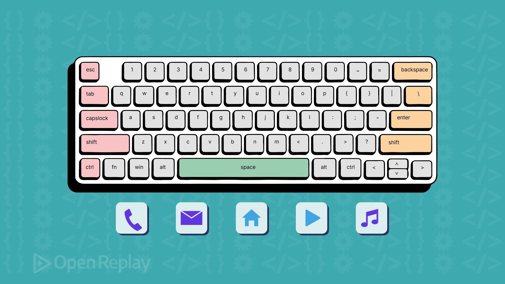

Why Keyboard Access is a Fundamental Requirement
Keyboard navigation is the bedrock of web accessibility. Any user who cannot operate a mouse — whether due to motor disabilities, tremors, repetitive strain injuries, temporary injuries like a broken arm, or simply a preference for speed — relies on the keyboard to interact with web applications. This group is larger than commonly assumed: power users, developers, and anyone who uses a laptop without a mouse also depend on robust keyboard support.
WCAG 2.2 Guideline 2.1 (Keyboard Accessible) states that all functionality must be operable through a keyboard interface, with no specific timing requirements for keystrokes. Failing this guideline effectively locks out a significant portion of users.

Standard Keyboard Controls
The browser and operating system together define a standard set of keyboard interactions. Developers should never override these without providing an equivalent or better alternative.
| Key / Combination | Action |
|---|---|
Tab |
Move focus to the next interactive element |
Shift + Tab |
Move focus to the previous interactive element |
Enter |
Activate a link or button; submit a form |
Space |
Activate a button, checkbox, or radio button; scroll the page |
Arrow keys |
Navigate within a component (e.g. radio group, listbox, tree, slider) |
Escape |
Close a modal dialog, tooltip, or dropdown |
Home / End |
Move to the first / last item in a list or text field |
Focus Management
Visible focus indicators
Every interactive element must display a visible focus indicator when it receives keyboard focus.
WCAG 2.4.11 (Focus Appearance, Level AA in WCAG 2.2) requires that focus indicators meet
minimum area and contrast requirements. Many designers suppress the browser's default
outline for aesthetic reasons — this is a critical accessibility failure.
/* ✓ Good: use :focus-visible to show focus only for keyboard navigation */
:focus-visible {
outline: 2px solid var(--accent);
outline-offset: 2px;
}
/* ✗ Bad: removes focus indicator entirely */
:focus { outline: none; }:focus-visible, not :focus
The :focus-visible pseudo-class applies only when the browser determines focus
should be visible — typically keyboard navigation. Mouse clicks on buttons won't show the ring,
satisfying designers without hurting keyboard users.
Logical tab order
Focus should move in a logical, predictable sequence that matches the visual and DOM order.
Avoid using positive tabindex values (e.g. tabindex="3") — they
override the DOM order and create a confusing navigation experience. Use
tabindex="0" to make a non-interactive element focusable, and
tabindex="-1" to make an element programmatically focusable but not in the
tab sequence.
Focus trapping in modals
When a modal dialog opens, keyboard focus must be trapped inside it. Pressing
Tab should cycle through the modal's interactive elements, and
Escape should close the modal and return focus to the trigger element.
Failing to do this causes keyboard users to get lost in the page behind the modal.
// When a modal opens:
modal.setAttribute('aria-modal', 'true');
firstFocusableElement.focus();
// When the modal closes:
modal.close();
triggerButton.focus(); // return focus to where the user wasSkip navigation links
On pages with long navigation menus, keyboard users must press Tab many times before reaching the main content. A skip link — a visually hidden link that becomes visible on focus and jumps to the main content — solves this problem efficiently.
<!-- Place this as the very first element inside <body> -->
<a class="skip" href="#main-content">Skip to main content</a>
<main id="main-content">...</main>This page includes a skip link — press Tab on page load to see it appear.
Keyboard Traps — The Opposite Problem
While trapping focus inside a modal dialog is intentional and correct, trapping focus in any other context is a severe accessibility violation (WCAG 2.1.2, Level A). A keyboard trap occurs when a user can Tab into a component but cannot Tab out of it without special knowledge or a mouse.
Custom date pickers, embedded media players, rich text editors, and third-party widgets are common sources of keyboard traps. Test each by tabbing into and out of the component using only the keyboard.
ARIA Keyboard Interaction Patterns
For custom interactive components that go beyond standard HTML controls, the WAI-ARIA Authoring Practices Guide (APG) defines expected keyboard interaction patterns. Following these patterns ensures that users who have learned one implementation of a component (e.g. a carousel, accordion, or tree view) will recognise the same pattern in another application.
- Tabs: Arrow keys move between tabs; Tab exits the tab strip.
- Accordion: Enter / Space toggles panels; Arrow keys move between headers.
- Combobox / autocomplete: Arrow keys navigate suggestions; Enter selects.
- Dialog: Focus is trapped inside; Escape closes.
- Menu bar: Arrow keys navigate items; Escape closes submenus.
Testing Keyboard Accessibility
Testing keyboard navigation requires only a keyboard — no specialist tools. Here is a minimal testing workflow:
- Put the mouse out of reach (or disable it in the OS settings).
- Load the page and immediately press
Tab— a skip link should appear. - Continue pressing
Taband verify every interactive element receives visible focus. - Activate links with
Enterand buttons with bothEnterandSpace. - Open any dropdown, dialog, or flyout and verify that focus is managed correctly and
Escapecloses it. - Fill out and submit every form using only the keyboard.
The axe DevTools browser extension will flag missing focus indicators, missing labels, and other keyboard-related issues automatically as a first pass before manual testing.